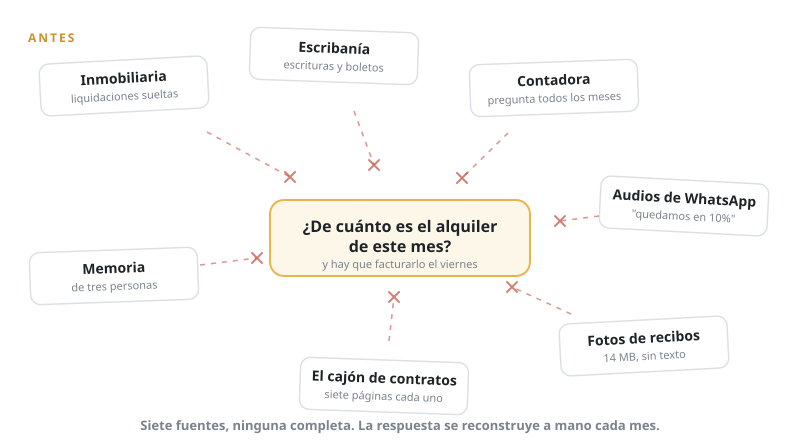
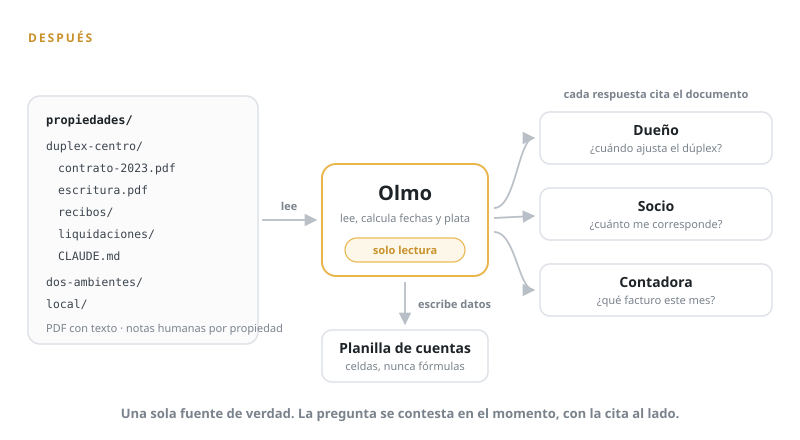

Esta semana la inmobiliaria le escribió a un cliente: "se viene el ajuste del alquiler del dúplex, ¿aplicamos el índice conversado o seguimos con el del contrato?". Él sabe de qué propiedad se trata, y que conversaron un cambio. Pero no recuerda si la conversación resultó en un compromiso de palabra o si solo esbozaba una posibilidad, no sabe la proyección de precio de cada alternativa, ni qué índice definía el contrato. Al cajón de los papeles, que deseaba mantener cerrado por más tiempo.
Quien administra varias propiedades, sea por cantidad o porque no es su trabajo principal, se encuentra con el problema: la información se reparte entre documentos de papel, a veces escaneados, a veces en la escribanía, y con el contexto escondido en audios de WhatsApp y la memoria de al menos tres personas distintas. Todos los meses la contadora pregunta al dueño de cuánto es cada alquiler para emitir facturas correctas, y la respuesta llega errada o tarde, y siempre con dudas.
Armé un agente para actuar de cerebro en esta pequeña empresa que nunca mereció un empleado. Lo llamo Olmo. Vive en un directorio de archivos, una carpeta por inmueble, cada una con sus escrituras, boletos, contratos de alquiler, recibos, y notas particulares de cada propiedad, inquilino y socio cuando aplica. Sabe leer PDFs, hace cuentas de fechas y de dinero, y responde citando la fuente original de cada dato. Entiende también la forma de esta sociedad, y cuánto corresponde a cada socio en cada momento.

Ajustes: qué índice de precios, y cada cuánto
Cada contrato ajusta distinto porque se firman en años distintos: IPC, índice Casa Propia, y los más viejos con un porcentaje mínimo cada seis meses. La cadencia importa tanto como el índice. Un ajuste trimestral sobre un índice que se mueve rápido compone distinto que uno semestral, y confundirlos es cobrar de menos cuatro meses o sorprender al inquilino con un número que no cuadra.
> Cliente: ¿cuándo corresponde el próximo ajuste del dúplex?
Olmo: Contrato firmado 01/08/2023, ajuste trimestral por índice Casa Propia
(cláusula 4, duplex-centro/contratos-alquiler/contrato-2023.pdf). Último ajuste
aplicado: 01/05/2026, canon actual $415.000. Próximo ajuste: 01/08/2026,
faltan 12 días. El dato del índice para ese mes todavía no está
publicado. Sugiero avisar al inquilino con el mecanismo de cálculo
y aplicar cuando salga el número oficial.Cómo lo armamos
Primero, los papeles se tienen que poder encontrar y leer. El paso cero fue juntar todo en un solo lugar, digitalizarlo y ordenarlo: verificar si cada documento tiene texto, y si no lo tiene, pasarlo por reconocimiento óptico, enderezarlo, limpiarlo y comprimirlo. Sin preprocesamiento un agente inventa, o consume 3 dólares de cómputo para entender cuándo se actualiza un alquiler. La IA es tan buena como su contexto, ordenar la información es la tarea principal.
Los documentos van a subcarpetas por propiedad:
propiedades/duplex-centro/
├── AGENTS.md
├── contratos-alquiler
│ ├── contrato-2025-renovacion.pdf
│ └── contrato-2023.pdf
├── documentos
│ ├── 2021-04-24-escritura.pdf
│ └── 2021-06-10-inscripcion-registral.pdf
└── recibos
├── 2025-01.pdf
├── 2025-02.pdf
└── 2025-04.pdfCada carpeta tiene su propio AGENTS.md, y Olmo lo lee antes que nada, siempre. Ahí viven las notas especiales: "este contrato ajusta 10% cada cuatro meses desde marzo", "el inquilino paga una parte en dólares, ver anexo".
Hay límites que lo hacen confiable. Olmo solo puede agregar cambios, nunca eliminar o reemplazar. Si un documento está mal, lo arregla una persona. Sobre la planilla de cuentas escribe celdas de datos, nunca fórmulas: los cálculos de rentabilidad los escribió el dueño en un formato que le es útil hace tiempo, y quedan intactos.

Vencimientos con margen para actuar
> Cliente: agendar en mi calendario un recordatorio
> 60 días antes del vencimiento de cada contrato
Olmo: Tres eventos creados con vos como único invitado:
Dos ambientes — 21/09/2026, 10:00-10:30
Duplex centro — 03/05/2027, 10:00-10:30
Local 4 — 03/12/2026, 10:00-10:30
Casa Peña queda afuera: no tiene el contrato cargado, así que
no puedo calcular la fecha. Vale la pena conseguirlo.
> Cliente: ¿algún vencimiento próximo en que deba enfocarme?
Olmo: Dos ambientes vence el 20/11/2026 (faltan 21 días).
Contrato original de 7 páginas, cláusulas poco claras
sobre quién decide las mejoras. Sugiero renovar con el modelo
corto de 2 páginas que se usa en las propiedades nuevas, si el
inquilino está de acuerdo. Borrador de aviso a la administradora
en salida/aviso-dos-ambientes.md.Olmo marca todo lo que cae dentro de una ventana de 60 días, y deja escrito el borrador del aviso a la inmobiliaria y el evento de calendario.
Cuentas: facturación, pagos y comisiones
Olmo ayuda a emitir cada factura para cada inmueble, cada mes. Mantiene la suma de facturación de los últimos doce meses móviles y avisa si el acumulado se acerca al límite del monotributo.
También cruza lo esperado contra lo recibido:
> Cliente: hacer reconciliaciones de pagos de marzo
Olmo: Dos ambientes: esperado $380.000, recibido $380.000, OK.
Dúplex: esperado $415.000, recibido $460.000, diferencia de
+$45.000 sin liquidación asociada. La última liquidación
es de febrero. Revisar antes de asentar.Y está la comisión mensual de la administradora, que según el acuerdo cubre "administración integral". Al listar contra qué se facturó esa comisión durante doce meses aparecieron: reenviar por mail una factura de servicios, y dos meses cobrados sin liquidación que los justifique. Es la deriva normal de un servicio que nadie vuelve a leer, y se ve cuando alguien mira doce meses de papel de una sentada.
Qué pasa con la rentabilidad
El número que importa a fin de año es la rentabilidad neta por propiedad, y cambia mucho según cómo se cuente la comisión del intermediario. En una de las propiedades el alquiler bruto anual dio cerca del 8,5% del valor de compra; descontando comisión, seguro y mantenimiento promedio, bajó a 6,1%. La misma propiedad administrada de forma directa, con los mismos supuestos de mantenimiento, daba alrededor de 7,3%. Ese 1,2% sugiere la pregunta: ¿cubre su valor la administración con esta inmobiliaria?
Todo esto pide disciplina: leer el papelerío todas las veces, y no una vez al firmar.
Tedioso para una persona y simple para nuestro agente.